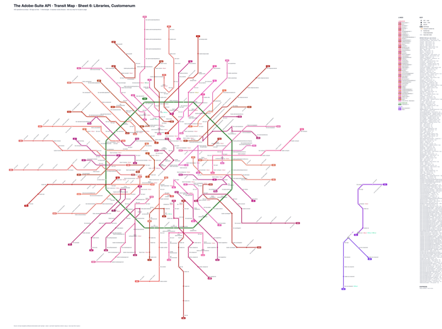
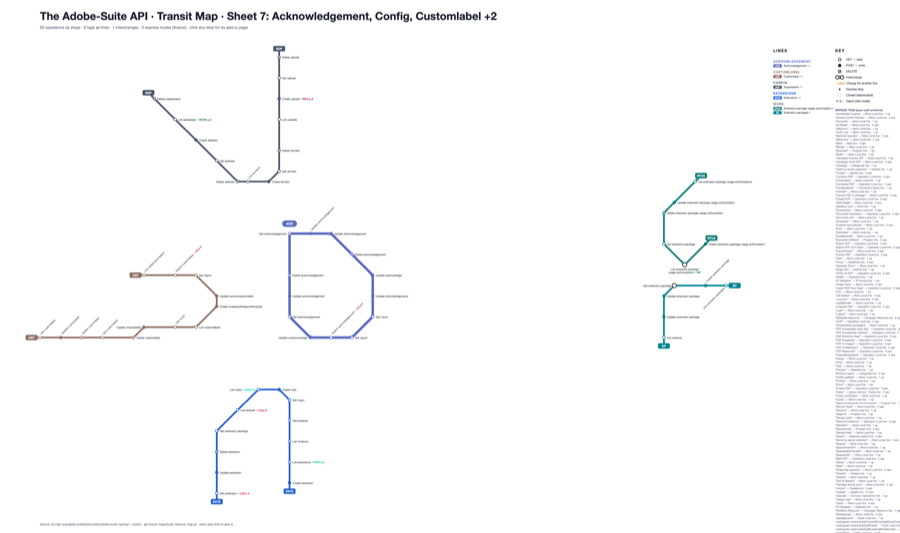

p.1 User, Batches, Group +14
450 operations · 37 lines
- User
- Batches
- Group
- Project
- Exim
- Componentmetadata
- Templates
- Administration
- Portalsection
- Category
- Usernote
- Work
- Update
- Loyalty
- Documentfolder
- Uifilter
- Datasets
2738 operations on 7 sheets · products that interchange most share a sheet · on each sheet, "⇄CODE p.N" means change for that line on page N · every stop links to apis.io
450 operations · 37 lines

448 operations · 47 lines
Interchanges to p.1 (9), p.3 (11), p.4 (2), p.5 (2), p.6 (1), p.7 (2)

448 operations · 59 lines
Interchanges to p.1 (11), p.2 (11), p.4 (6), p.5 (9), p.6 (7), p.7 (2)

446 operations · 40 lines
Interchanges to p.1 (10), p.2 (2), p.3 (6), p.5 (20), p.6 (58), p.7 (4)

443 operations · 41 lines
Interchanges to p.1 (2), p.2 (2), p.3 (9), p.4 (20), p.6 (2)

440 operations · 58 lines

63 operations · 6 lines